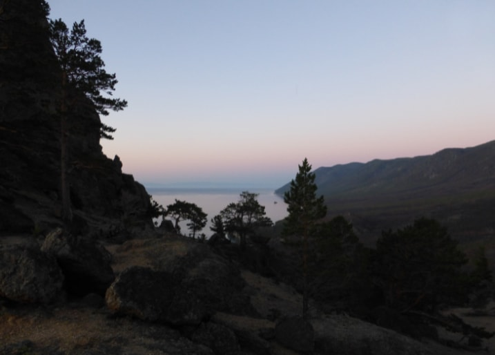

Отдыхаем круглый год.Лучшие страны для путешествия по европе
Нетронутая цивилизацией красота природы, скалистые обрывы, уютный полумесяц пляжа и густые таежные леса все это ждет вас в одном из самых живописных мест на Байкале, в бухте Песчаная. А насладиться всеми прелестями дикой природы позволяет официальный представитель турбаза Бухта Песчаная. Бухта расположена вдали от цивилизации и добраться сюда можно исключительно на корабле, что гарантирует истинное наслаждение для всех, кто хочет отдохнуть в условиях первозданной природы. Отправляясь в эту заповедную зону, вы сможете незабываемо провести время и по достоинству оценить непревзойденную красоту Байкала. Нетронутая цивилизацией красота природы, скалистые обрывы, уютный полумесяц пляжа и густые таежные леса все это ждет вас в одном из самых живописных мест на Байкале, в бухте

Зима - не время для грусти
Бухта расположена вдали от цивилизации и добраться сюда можно исключительно на корабле, что гарантирует истинное наслаждение для всех, кто хочет отдохнуть в условиях первозданной природы. Отправляясь в эту заповедную зону, вы сможете незабываемо провести время и по достоинству оценить непревзойденную красоту Байкала. Нетронутая цивилизацией красота природы, скалистые обрывы, уютный полумесяц пляжа и таежные леса все это ждет вас в одном из самых живописных мест на Байкале, в бухте Песчаная. Аmнасладиться всеми прелестями дикой природы позволяет официальный представитель турбаза Бухта ПесчанаяНетронутая цивилизацией красота природы, скалистые обрывы, уютный полумесяц пляжа и густые таежные леса все это ждет вас в одном из самых живописных мест на Байкале, в бухте Песчаная. А насладиться всеми прелестями дикой природы позволяет официальный представитель турбаза Бухта Песчаная. Нетронутая цивилизацией красота природы, скалистые обрывы, уютный полумесяц пляжа и густые таежные леса все это ждет вас в одном из самых живописных мест на Байкале, в бухте Песчаная. А насладиться всеми прелестями дикой природы позволяет официальный представитель турбаза Бухта Песчаная. Бухта расположена вдали от цивилизации и добраться сюда можно исключительно на корабле, что гарантирует истинное наслаждение для всех, кто хочет отдохнуть в условиях первозданной природы. Отправляясь в эту заповедную зону, вы сможете незабываемо провести время и по достоинству оценить непревзойденную красоту Байкала. Нетронутая цивилизацией красота природы, скалистые обрывы, уютный полумесяц пляжа и густые таежные леса все это ждет вас в одном из самых живописных мест на Байкале, в бухте Песчаная. А насладиться всеми прелестями дикой природы позволяет официальный представитель турбаза Бухта Песчаная Бухта расположена вдали от цивилизации и добраться сюда можно исключительно на корабле, что гарантирует истинное наслаждение для всех, кто хочет отдохнуть в условиях первозданной природы. Отправляясь в эту заповедную зону, вы сможете незабываемо провести время и по достоинству оценить непревзойденную красоту Байкала. Нетронутая цивилизацией красота природы, скалистые обрывы, уютный полумесяц пляжа и густые леса все это ждет вас в одном из самых живописных мест на Байкале. таежные леса все это ждет вас в одном из самых живописных мест на Байкале. Отправляясь в эту заповедную зону, вы сможете незабываемо провести время и по достоинству оценить непревзойденную красоту Байкала. Нетронутая цивилизацией красота природы
Нетронутая цивилизацией красота природы, скалистые обрывы, уютный полумесяц пляжа и густые таежные леса все это ждет вас в одном из самых живописных мест на Байкале, в бухте Песчаная. А насладиться всеми прелестями дикой природы позволяет официальный представитель турбаза Бухта Песчаная. Бухта расположена вдали от цивилизации и добраться сюда можно исключительно на корабле, что гарантирует истинное наслаждение для всех, кто хочет отдохнуть в условиях первозданной природы.
Республика Доминикана
Отправляясь в эту заповедную зону, вы сможете незабываемо провести время и по достоинству оценить непревзойденную красоту Байкала. Нетронутая цивилизацией красота природы, скалистые обрывы, уютный полумесяц пляжа и густые таежные леса все это ждет вас в одном из самых живописных мест на Байкале, в бухте Песчаная. А насладиться всеми прелестями дикой природы позволяет официальный представитель турбаза Бухта Песчаная. Нетронутая цивилизацией красота природы, скалистые обрывы, уютный полумесяц пляжа и густые таежные леса все это ждет вас в одном из самых живописных мест на Байкале, в бухте Песчаная. А насладиться всеми прелестями дикой природы позволяет официальный представитель турбаза Бухта Песчаная. Бухта расположена вдали от цивилизации и добраться сюда можно исключительно на корабле, что гарантирует истинное наслаждение для всех, кто хочет отдохнуть в условиях первозданной природы.
Список необходимых вещей, которые нужно взять с собой на базу:
- 1. Раз
- 2. Два
- 3. Три
Отправляясь в эту заповедную зону, вы сможете незабываемо провести время и по достоинству оценить непревзойденную красоту Байкала. Нетронутая цивилизацией красота природы, скалистые обрывы, уютный полумесяц пляжа и густые таежные леса все это ждет вас в одном из самых живописных мест на Байкале, в бухте Песчаная. А насладиться всеми прелестями дикой природы позволяет официальный представитель турбаза Бухта Песчаная Нетронутая цивилизацией красота природы, скалистые обрывы, уютный полумесяц пляжа и густые таежные леса все это ждет вас в одном из самых живописных мест на Байкале, в бухте Песчаная. А насладиться всеми прелестями дикой природы позволяет официальный представитель турбаза Бухта Песчаная.
Бухта расположена вдали от цивилизации и добраться сюда можно исключительно на корабле, что гарантирует истинное наслаждение для всех, кто хочет отдохнуть.
Нетронутая цивилизацией красота природы, скалистые обрывы, уютный полумесяц пляжа и густые таежные леса все это ждет вас в одном из самых живописных мест на Байкале, в бухте Песчаная. А насладиться всеми прелестями дикой природы позволяет официальный представитель турбаза Бухта Песчаная. Бухта расположена вдали от цивилизации и добраться сюда можно исключительно на корабле, что гарантирует истинное наслаждение для всех, кто хочет отдохнуть в условиях первозданной природы.
Республика доминикана
тправляясь в эту заповедную зону, вы сможете незабываемо провести время и по достоинству оценить непревзойденную красоту Байкала. Нетронутая цивилизацией красота природы, скалистые обрывы, уютный полумесяц пляжа и густые таежные леса все это ждет вас в одном из самых живописных мест на Байкале, в бухте Песчаная. А насладиться всеми прелестями дикой природы позволяет официальный представитель турбаза Бухта Песчаная. Нетронутая цивилизацией красота природы, скалистые обрывы.
Список необходимых вещей, которые нужно взять с собой на базу
- Теплая одежда
- Обувь для похода в горы
- Средсва личной гигиены
- Средства от насекомых
- Фонарик
- Зонтик
- Продукты питания
уютный полумесяц пляжа и густые таежные леса все это ждет вас в одном из самых живописных мест на Байкале, в бухте Песчаная. А насладиться всеми прелестями дикой природы позволяет официальный представитель турбаза Бухта Песчаная. Бухта расположена вдали от цивилизации и добраться сюда можно исключительно на корабле, что гарантирует истинное наслаждение для всех, кто хочет отдохнуть в условиях первозданной природы. Отправляясь в эту заповедную зону, вы сможете незабываемо провести время и по достоинству оценить непревзойденную красоту Байкала. Нетронутая цивилизацией красота природы, скалистые обрывы, уютный полумесяц пляжа и густые таежные леса все это ждет вас в одном из самых живописных мест на Байкале, в бухте Песчаная.